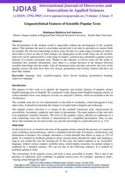

Topics language, style, scientific-popular, texts, lexical meaning, grammatical meaning, expressive language
Collection journals_contributions; journals
Item Size 4.0M
The development of the modern world is impossible without the development of the scientific sphere. This indicates the need to consolidate and provide it not only to specialists in various fields of scientific life who have knowledge in these areas, but also to a wide range of readers in order to allow them to have an idea of what changes are taking place in the world. Since not all scientific style texts can be understood by a wide range of readers, scientists have identified a popular science substyle of scientific functional style.
Addeddate 2022-09-12 08:29:26
Identifier httpsopenaccessjournals.euindex.phpijdiasarticleview1335